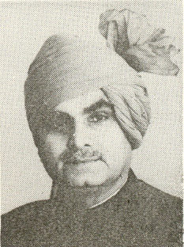

ଆର. ଭି. ସ୍ AMIN ାମୀନାଥନ୍

ମୁଖ୍ୟ କାର୍ଯ୍ୟକାଳ |:
ଗ୍ରାମ୍ୟ ଉନ୍ନୟନ ମନ୍ତ୍ରଣାଳୟ, ରାଜ୍ୟ ମନ୍ତ୍ରୀ
୧୯୮୦ - ୧୯୮୩
କୃଷି ମନ୍ତ୍ରଣାଳୟ, ରାଜ୍ୟ ମନ୍ତ୍ରୀ
୧୯୮୦ - ୧୯୮୩
୨ୟ ଇନ୍ଦିରା ଗାନ୍ଧୀ ମନ୍ତ୍ରଣାଳୟ
କୃଷି ମନ୍ତ୍ରଣାଳୟ
ରାଜ୍ୟ ମନ୍ତ୍ରୀ
ଗ୍ରାମ୍ୟ ଉନ୍ନୟନ ମନ୍ତ୍ରଣାଳୟ
ରାଜ୍ୟ ମନ୍ତ୍ରୀ
ଗ୍ରାମ୍ୟ ଉନ୍ନୟନ ମନ୍ତ୍ରଣାଳୟ
ରାଜ୍ୟ ମନ୍ତ୍ରୀ
୨ୟ ଇନ୍ଦିରା ଗାନ୍ଧୀ ମନ୍ତ୍ରଣାଳୟ

1_Upload_2042.pdf
1_Upload_2373.pdf

ଇନ୍ଦିରା ଗାନ୍ଧୀ
o-Indira_Gandhi.htmlପ୍ରଧାନ ମନ୍ତ୍ରୀ
୧୪ ଜାନୁଆରୀ ୧୯୮୦ - ୧ ନଭେମ୍ବର ୧୯୮୪

ରାଓ ବୀରେନ୍ଦ୍ର ସିଂ
o-Rao_Birender_Singh.htmlକ୍ୟାବିନେଟ ମନ୍ତ୍ରୀ
୧୪ ଜାନୁଆରୀ ୧୯୮୦ - ୧୫ ଜାନୁଆରୀ ୧୯୮୨
ଆର. ଭି. ସ୍ amin ାମୀନାଥନ୍
o-R._V._Swaminathan.htmlରାଜ୍ୟ ମନ୍ତ୍ରୀ
୧୪ ଜାନୁଆରୀ ୧୯୮୦ - ୨୯ ଜାନୁଆରୀ ୧୯୮୩
ପ୍ରଯୁଜ୍ୟ ଆଦେଶ |
1_Upload_2042.pdf[47]୧୪ ଜାନୁଆରୀ ୧୯୮୦ମନ୍ତ୍ରୀ ପରିଷଦ1_Upload_2427.pdf[25]୩ ମାର୍ଚ୍ଚ ୧୯୮୦ମନ୍ତ୍ରୀ ପରିଷଦ1_Upload_2428.pdf[26]୭ ମାର୍ଚ୍ଚ ୧୯୮୦ମନ୍ତ୍ରୀ ପରିଷଦ1_Upload_2429.pdf[33]୨ ଜୁନ ୧୯୮୦ମନ୍ତ୍ରୀ ପରିଷଦ1_Upload_2430.pdf[33]୨୯ ସେପ୍ଟେମ୍ବର ୧୯୮୦ମନ୍ତ୍ରୀ ପରିଷଦ1_Upload_2424.pdf[39]୨୧ ଅକ୍ଟୋବର ୧୯୮୦ମନ୍ତ୍ରୀ ପରିଷଦ1_Upload_2444.pdf[1]୨୭ ନଭେମ୍ବର ୧୯୮୦ପୋର୍ଟଫୋଲିଓର ପରିବର୍ତ୍ତନ1_Upload_2426.pdf[20]୧୫ ଜାନୁଆରୀ ୧୯୮୧ମନ୍ତ୍ରୀ ପରିଷଦ1_Upload_2411.pdf[37]୧୦ ଅଗଷ୍ଟ ୧୯୮୧ମନ୍ତ୍ରୀ ପରିଷଦ1_Upload_2413.pdf[38]୧୬ ଜାନୁଆରୀ ୧୯୮୨ମନ୍ତ୍ରୀ ପରିଷଦ1_Upload_2419.pdf[2]୨୯ ଜାନୁଆରୀ ୧୯୮୨ମନ୍ତ୍ରୀ ପରିଷଦ1_Upload_2414.pdf[37]୨୩ ଜୁନ ୧୯୮୨ମନ୍ତ୍ରୀ ପରିଷଦ1_Upload_2373.pdf[25]୨୯ ଜାନୁଆରୀ ୧୯୮୩ପୋର୍ଟଫୋଲିଓର ପରିବର୍ତ୍ତନ